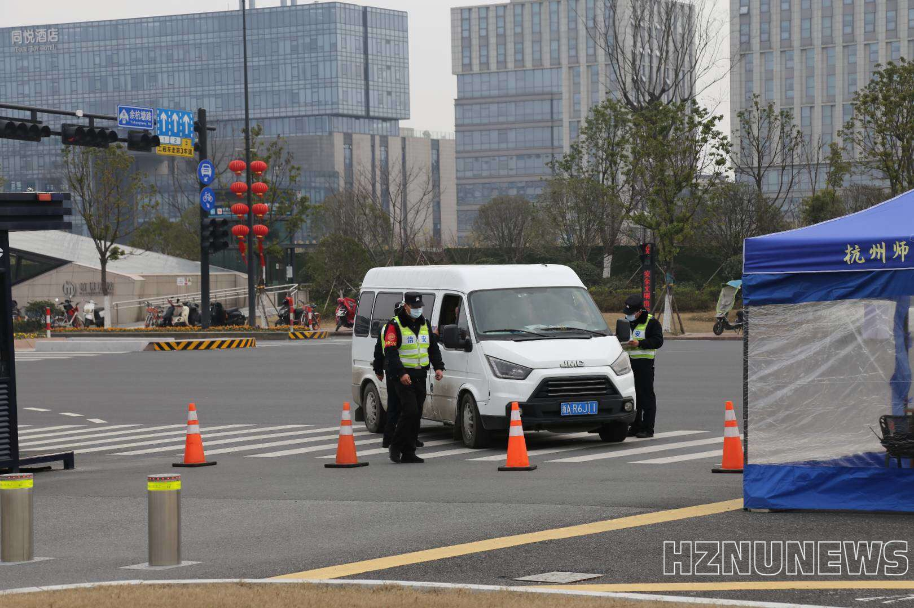

学校召开疫情防控工作部署会
领导小组部署有力。2月4日下午，浙江省教育厅召开全省教育系统视频会议，研究部署防控新型冠状病毒感染的肺炎疫情相关工作。会议要求全省教育系统必须严阵以待、严防死守，坚决遏制疫情向教育系统蔓延，坚决打赢校园疫情防控阻击战。参加会议后，领导小组立即结合工作实际，对学校防控工作进行再研究、再部署。陈春雷、尚永丰要求，全校上下要进一步提高政治站位，把疫情防控工作作为当前最重要的工作来抓，进一步推进防疫工作做细做实。一要完善学校疫情防控领导小组工作机制，在各二级单位设立防控专班，明确分工，切实落实全方位排摸、每天一报等工作。二要主动与省市教育主管部门及余杭区仓前街道等属地管理部门做好对接，协助属地做好疫情防控工作。三要进一步细化校园管控，实施校园“全封闭”管理，多校区联防联控，并加强对学院疫情防控工作的指导和督查。四要完善后勤服务保障，设置观察隔离区域，针对不同类别的人员进行分类隔离。五要加强师生进出校门管理和信息排查，做好国际交流项目回国学生的管理、排查。
校园封闭管理有序。党委保卫部进一步强化校园封闭管理，严格管理师生进出校门情况，无关人员一律拒之门外。同时，还在仓前校区南门派专人帮助师生递取简单明确的物品，减少人员进校次数。公共管理部门和各学院一起，对师生的近期健康、就医、出行、接触疫区等情况，开展严格的疫情排查，确保不漏过一个地区、不漏过一人。学校已建立隔离观察场所近150间，卫生部门每天选派医生、护士各一名，实行24小时值班制度，负责观察人员的医疗服务。后勤服务集团公寓服务中心专门制定《体温检测登记本》和《公共区域消毒记录本》，与留宿学生签订疫情承诺书，严格规范留宿人员进出登记和体温检测。工作人员积极落实超市内部早晚一次消毒制度，并对进出人员进行体温检测。此外，后勤还对各校区垃圾集中点加强消毒清卫工作，专门增设一次性口罩回收专用垃圾桶。后勤在恕园6号楼为留学生开设了集中医学观察点，并为在此隔离的留学生提供送餐、送水，代购生活必需品等服务。
师生参与疫情防控有情。值得一提的是，疫情防控工作中也涌现出许多感人事迹，受到社会各界的关注与点赞。医学院预防医学系教师为相关人员提供传染病预防知识与技能培训演示；卫生事业管理系教师利用移动互联网平台，开展大样本社会调查，为疫情科学防控、公众情绪疏导等政府管理和社会治理措施提供决策依据。此外，医学院团委还号召在省内、国内疫情相对较轻地区的医学生，配合当地团委前往基层街道、社区、乡镇，发挥专业优势，协助开展体温测量、人员排查等工作，参加健康宣教、科学普及等活动。270余名青年博士自发筹款6万余元捐赠杭州市西溪医院；钱江学院师生网络接力诗朗诵《为了相见在春天》致敬一线工作者；附属医院一批党员带头，驰援武汉积极开展疫情防控工作；以及附属医院开通杭州互联网问诊直播等受到中央、省市主流媒体的报道。此外，除了附属医院驰援武汉的四位医者，护理专业校友褚欢欢、唐洪林、朱佳清、姜淑庆和卫生事业管理专业校友卢晓杰、陈烽燕、成王金，临床医学专业校友赵文斌等义无反顾地奔向武汉，奋战在抗疫的最前线，展现了杭师大毕业生的风采。